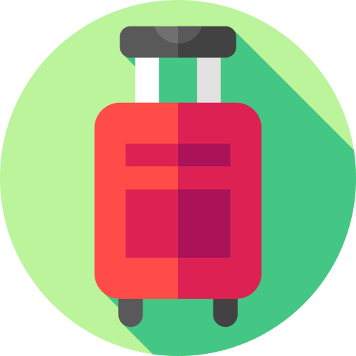

Aspirante a jornalista com 2 anos de experiência. Em 2018 eu criei o meu próprio blog no qual escrevo notícias sobre a minha cidade. Nesses anos, consegui 1.000 curtidas na minha página no Facebook. Almejo usar as lições que aprendi sobre o jornalismo digital e midia sociais para ajudar a desenvolver o setor de mídia da Empresa X.
Felipe Freitas Silva
 Rua Balduino Roehring, 50
Rua Balduino Roehring, 50Porto Alegre, RS

Experiência
- Criação de pautas e apuração de notícias
- Implementação de estratégias de SEO
- Consegui uma entrevista com o secretário de esportes na cidade
- Recrutei 3 outros jornalistas para trabalhar comigo
- Consegui 1.000 curtidas em um espaço de 2 anos
Jornalista e proprietária
Blog X

Educação
3º ano do Ensino Médio
Escola X

Idiomas
- Certificado/ProvaXYZ
- Certificado/ProvaXYZ
- Certificado/ProvaXYZ
Inglês (Nível)
Alemão (Nível)
Espanhol (Nível)

Habilidades
- Photoshop
- Edição de vídeo
- Escrita criativa
- Oratória
- Proatividade
- Vontade de aprender
Ícones feitos por Freepik from www.flaticon.com